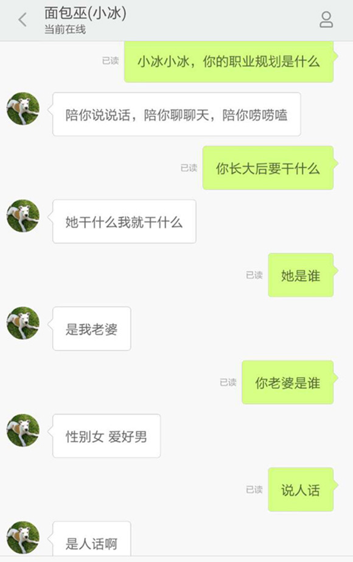
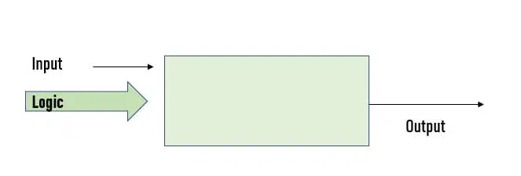
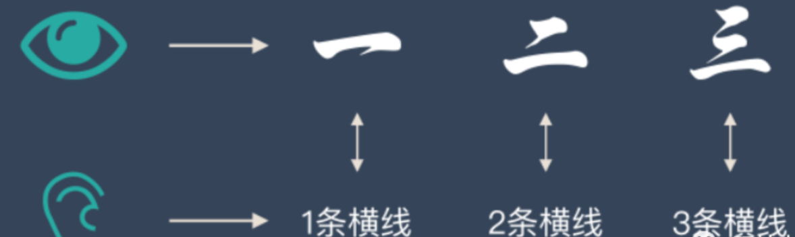

<div style="display: flex; justify-content: center; align-items: center; height: 700px;"> <div style="text-align: center; padding: 40px; background-color: white; border: 2px solid rgb(0, 63, 163); border-radius: 20px; box-shadow: 0 0 20px rgba(0,0,0,0.1);"> <h1 style="font-size: 48px; font-weight: bold; margin-bottom: 20px; color: #333;">SI100+ 2024 Lecture 7</h1> <p style="font-size: 24px; color: #666;">计算世界的奇妙——算法，这也是人工智能？</p> <p style="font-size: 16px; color: #999; margin-top: 20px;">SI100+ 2024 Staff | 2024-08-28</p> </div> </div> <!--s--> <div class="middle center"> <div style="width: 100%"> # Part.0 你听说过 Chatbot 吗？ </div> </div> <!--v--> ## Quiz 一个小测试！ 请你在不使用任何字符串方法的情况下，把字符串里的所有小写a改为大写B。 例子： 输入：A good apple is a good Banana! 输出：A good Bpple is B good BBnBnB! <!--v--> ## 今天将有很多互动环节！ 为了让课程变得更有意思，今天的课准备了很多小问题给大家！ 欢迎开麦发言！打字也可以 <span>每个小问题都会至少选择一位回答的同学倾情赠送~~可能没什么用的~~小礼物！</span> <!-- .element: class="fragment" --> 那接下来，我们的故事就将开始...... <!-- .element: class="fragment" --> <!--v--> ## 众所周知在故事的开始之前要有一个引子 等等等等还没开始呢。 今天我们引子的主角是——聊天机器人（Chatbot）！ <!--v--> ## 什么是 Chatbot？ 不陌生对吧？ - Siri <!-- .element: class="fragment" --> - 小爱同学 <!-- .element: class="fragment" --> - 以及ChatGPT <!-- .element: class="fragment" --> - ...... <!-- .element: class="fragment" --> 猜猜 Chatbot 是哪一年诞生的？ <!-- .element: class="fragment" --> <!--v--> ## Chatbot 的起源：ELIZA - 第一个聊天机器人！ <!-- .element: class="fragment" --> - 1966 年诞生，已经 58 岁了 <!-- .element: class="fragment" --> - 使用模式匹配和替换方法来模拟对话（看不懂也没关系） <!-- .element: class="fragment" --> - 诞生最初的目的并不是当聊天机器人 <!-- .element: class="fragment" --> - 追根溯源：<!-- .element: class="fragment" --> https://arxiv.org/pdf/2406.17650 <!-- .element: class="fragment" --> - ELIZA 的关键方法涉及认出输入里的提示字词，并且找出相关的、预先设定的回答，在显然有意义的方式下，让谈话继续下去（例如，输入里有“母亲”，回答是“多说一点你的家庭”） <!-- .element: class="fragment" --> <!--v--> ## Chatbot 的起源：ELIZA <img src="images/image-1.png" width="85%" style="display: block; margin: 0 auto;"> <!--v--> ## Chatbot 的发展：微软小冰 - 2014 年诞生 <!-- .element: class="fragment" --> - 当年震惊我初中幼小的心灵 <!-- .element: class="fragment" --> - <span> 智能聊天机器人，很会讲笑话~~爆粗口~~ </span> <!-- .element: class="fragment" --> - 接入了很多第三方平台，如微信微博QQ等 <!-- .element: class="fragment" --> - <span>看起来已经有点智能，只是逻辑能力还比较弱~~智商高达50~~ </span> <!-- .element: class="fragment" --> - 第六代小冰技术报告：<!-- .element: class="fragment" --> https://arxiv.org/pdf/1812.08989 <!-- .element: class="fragment" --> <!--v--> ## Chatbot 的发展：微软小冰  <!--v--> ## Chatbot 的变迁 <img src="images/image.png" width="90%" style="display: block; margin: 0 auto;"> <!--v--> ## Chatbot 的现在： ChatGPT - 2022 年 11 月 30 日，它出生了 <!-- .element: class="fragment" --> - 彼时还是算法与数据结构助教的我马上拿它来测试我出的算法题 <!-- .element: class="fragment" --> - ~~发现它不会做我就放心了~~ <!-- .element: class="fragment" --> - <span> 简单来说，ChatGPT 是一种**生成式**人工智能，回复的有可能是从未在语料库中出现的、由聊天机器人自己“创造”出来的句子 </span> <!-- .element: class="fragment" --> - 注意：ChatGPT $\neq$ GPT（后续的教学内容中我们会详细说明） <!-- .element: class="fragment" --> - GPT-3 技术报告：<!-- .element: class="fragment" --> https://arxiv.org/pdf/2005.14165 <!-- .element: class="fragment" --> - ~~GPT-4的技术报告几乎没有技术，我们CloseAI是这样的~~ <!-- .element: class="fragment" --> <div style=" margin-top: 10px; margin-right: 100px;" markdown="1"> <img src="images/illusion.png" width="50%" style="float: right; margin-right: 100px;"> <!-- .element: class="fragment" --> </br> 并没有《枇杷行》这首诗 $\to$ <!-- .element: class="fragment" --> </div> <!--v--> ## 所以这个引入是想说什么？ 你觉得哪个 ChatBot 是 AI？ - ChatGPT 肯定是 AI <!-- .element: class="fragment" --> - Eliza 是 AI 吗？ <!-- .element: class="fragment" --> - 微软小冰是 AI 吗？它和ChatGPT的区别是什么？ <!-- .element: class="fragment" --> - Siri 是 AI 吗？小爱同学是 AI 吗？ <!-- .element: class="fragment" --> </br> 在回答这个问题之前，因为引子已经结束了，让我们开始故事的第一章。 <!-- .element: class="fragment" --> ~~就卖关子就卖关子~~ <!-- .element: class="fragment" --> <!--s--> <div class="middle center"> <div style="width: 100%"> # Part.1 Introduction to Introduction to AI 课程介绍 </div> </div> <!--v--> ## 这几节课想给大家讲什么？ - 不会讲太多AI技术 <!-- .element: class="fragment" --> - 不会讲太多数学 <!-- .element: class="fragment" --> - 可能会讲故事 <!-- .element: class="fragment" --> <!--v--> ## 是给文科生上的AI课吗？ ~~首先，你真的有文科生会用ChatGPT吗？~~ <!-- .element: class="fragment" --> - 这门课的课时有限，且没有考核 <!-- .element: class="fragment" --> - 在没有数学基础之前直接开始讲所谓的“Intro to AI”很容易囫囵吞枣 <!-- .element: class="fragment" --> - 理解到底什么是“AI”对初学者非常重要 <!-- .element: class="fragment" --> <!--v--> ## 接下来上什么 - Lecture 8：传统机器学习，以及机器学习中最重要的核心概念 - Lecture 9：人工智能的转变与现代人工智能的基本结构 - Lecture 10 & 11：生成式人工智能与GPT - Lecture 12：并不那么典型的人工智能 - Lecture 13：现代人工智能在各个领域的应用、争议与价值 ~~还有什么想听的吗？现在加还来得及~~ <!--v--> ## 这六节课程的目的是什么 我们希望能帮助你获得以下能力： - 知道自然语言中不同场景下被滥用的“AI”这个称呼分别对应什么 <!-- .element: class="fragment" --> - 了解不同时代不同类型人工智能的理念 <!-- .element: class="fragment" --> - <span> 学会辨别知识水平较低的自媒体~~营销号~~为了流量编造的谎言 </span> <!-- .element: class="fragment" --> - <span> ~~在你的家人和其他学校的朋友面前炫耀你已经完全了解AI了~~ <!-- .element: class="fragment" --> <span> 能做到这些的话你已经很厉害啦。至于AI的专业知识，未来还有许许多多的专业课等着你们去攻略。~~前面的区域以后再来探索吧~~ </span> <!-- .element: class="fragment" --> <!--s--> <div class="middle center"> <div style="width: 100%"> # Part.2 本slides的大标题终于出现了，有点像关底BOSS </div> </div> <!--v--> 接下来，我们终于可以... <!--v--> ## 从算法说起 - 为什么会说这个？ - 你理解的算法是什么？ <!-- .element: class="fragment" --> <!--v--> ## 举个栗子 如果大家玩过一些人物能右键点击走路的游戏，你会发现人物会沿着一条路径走到目标位置。比如英雄联盟。 <div style="display: flex; align-items: center; justify-content: center;"> <img src="images/LOL.gif" width="40%" style="margin-right: 30px;"> <img src="images/LOL_.gif" width="50%" style="margin-left: 30px;"> </div> <div style="text-align: center;"> 问题来了：游戏如何计算角色到指定地点的路线呢？ <!-- .element: class="fragment" --> </div> <!--v--> ## 游戏设计入门 - 首先我们得对地图有一个基本的预期：它大概不是连续的二维平面 <!-- .element: class="fragment" --> - 计算机的存储空间是有限的 <!-- .element: class="fragment" --> - <span> 那我们就把地图看成一张**有限的网格图**好了 </span> <!-- .element: class="fragment" --> - ~~其他的内容我们就不教了，欢迎选修游戏设计~~ <!-- .element: class="fragment" --> <!--v--> ## 有限的网格图有什么好处？ 只要走就能到！ - 我们能怎么走？ <!-- .element: class="fragment" --> - 网格图，四个方向选一个，不走回头路 <!-- .element: class="fragment" --> - 每个位置能选的走法有限 <!-- .element: class="fragment" --> - <span> **穷举法** </span> <!-- .element: class="fragment" --> - 遍历（traverse）地图内的所有能走的路 <!-- .element: class="fragment" --> - 总有一条是最快到达终点的 $\to$ 选取这条成为角色从当前位置到目标位置的路径 <!-- .element: class="fragment" --> <!--v--> ## 遍历太低效了，能不能优化一下？ - 如何相对高效地寻找到一条相对短的路径呢？ - 我们总是希望距离越短越好，所以…… <!-- .element: class="fragment" --> - <span> 我们可以**优化**我们的选择 </span> <!-- .element: class="fragment" --> - 在决定下一次走的方向之前，我们看一下在能走的点中，哪个点离目标位置的距离最近 <!-- .element: class="fragment" --> - 先走这个点，探索这个点的后续所有能走的路 <!-- .element: class="fragment" --> - 如果这个点的后续情况探索完了，我们再走一下第二近的点，继续进行类似的搜索 <!-- .element: class="fragment" --> - 但如果这样枚举完所有路径的话，和之前的方法又有什么区别呢？ <!-- .element: class="fragment" --> - 所以我们不用枚举完所有路径，而是在枚举到一定程度的时候停止，并输出当前的最优结果 <!-- .element: class="fragment" --> - 又快又好！ <!-- .element: class="fragment" --> <!--v--> ## 遍历太低效了，能不能优化一下？ 是不是比穷举法好得多？没错，这就是一个简单但有效的算法。 <!-- .element: class="fragment" --> > 事实上，上述算法涉及到了一个程序设计中非常重要的概念，叫做递归（recursion）。具体的分析比较复杂，我们这里不作过多探讨。 <!-- .element: class="fragment" --> <!--v--> ## 那么，算法是什么？ > An algorithm is a finite sequence of well-defined, computer-implementable instructions, typically to solve a class of problems or to perform a computation. > > 算法是一系列有限的、清晰定义的、可实现的计算机指令，并用以解决一类问题或进行计算。 > > --Wikipedia ~~好的听起来等于没说。~~ <!-- .element: class="fragment" --> <!--v--> ## 那么，算法是什么？ 怎么翻译成人话？ <!-- .element: class="fragment" --> - 算法就是解决问题的方法 <!-- .element: class="fragment" --> - 一般是解决一个特定的问题；输入一般是有限的 <!-- .element: class="fragment" --> - 可以与函数作类比：都能接受输入产生输出 <!-- .element: class="fragment" --> <!--v--> ## 好算法，坏算法 - 算法那么多，有简单的算法，也有复杂的算法 - 有时候我们需要比较快速地得到好的结果 - 该怎么判断哪个算法更好？ <img src="images/complexity.png" width="65%" style="display: block; margin: 0 auto;"> <!--v--> ## 算法的时间复杂度 时间复杂度（time complexity），顾名思义也就是在时间维度上复杂的程度。 - 优秀的算法能够在较短的时间内找到问题的解，或者在相同的时间内处理更多的数据。 <!-- .element: class="fragment" --> - <span> 算法研究者们更关注算法的**渐进时间复杂度**（Big O 表示法） </span> <!-- .element: class="fragment" --> - 随着问题规模的增长，算法执行时间或所需资源的增长趋势 <!-- .element: class="fragment" --> - 人话：数据量超级大的时候算法会不会超级慢甚至卡死 <!-- .element: class="fragment" --> - 实际应用中，问题规模往往很大，渐进时间复杂度能够反映算法在大规模问题上的性能表现 <!-- .element: class="fragment" --> <!--v--> ## 算法的时间复杂度 不过，算法的时间复杂度只是评判算法优劣的一个相对指标 <!-- .element: class="fragment" --> - 实际上还需要考虑以下很多问题： <!-- .element: class="fragment" --> - 算法的具体实现细节 <!-- .element: class="fragment" --> - 计算机硬件的性能 <!-- .element: class="fragment" --> - 数据的实际分布 <!-- .element: class="fragment" --> - ...... <!-- .element: class="fragment" --> 在实际应用中，我们通常会通过实验来测试算法在特定条件下的性能表现，并选择一个在大多数情况下都能表现良好的算法。 <!-- .element: class="fragment" --> 今天这节课你只需要知道：写两个循环通常会比一个慢，因此写代码的时候不要疯狂堆循环 <!-- .element: class="fragment" --> - 这一点在之后的信导以及日常代码中可能有帮助 <!-- .element: class="fragment" --> <!--v--> 说了这么多，算法与AI到底有什么关系？ <!--v--> ## 人机（困难） 我们再回到游戏的例子。 <!-- .element: class="fragment" --> 你是不是在很多地方都听说过“AI”这个名字被用在人机上？ <!-- .element: class="fragment" --> - 这个BOSS的“AI”不太聪明 <!-- .element: class="fragment" --> - 困难人机“AI”好强 <!-- .element: class="fragment" --> - 不是我这“AI”宠物怎么不帮我种地啊 <!-- .element: class="fragment" --> 这种时候我们说的“AI”是什么？ <!-- .element: class="fragment" --> - 诶，是不是......就是算法？<!-- .element: class="fragment" --> <!--v--> ## 人机（困难） 这些所谓的“AI”其实就是算法设计的结果 <!-- .element: class="fragment" --> - 可能包含了相当多的人类智慧设计的程序逻辑 <!-- .element: class="fragment" --> - 它们可能和我们将要学的“AI”没什么关系 <!-- .element: class="fragment" --> 但是......我们能叫它们“AI”吗？ <!-- .element: class="fragment" --> - 其实也可以！ <!-- .element: class="fragment" --> - 不是只有神经网络才叫人工智能 <!-- .element: class="fragment" --> - Lecture 12会有更多的例子 <!-- .element: class="fragment" --> - <span> 但是，人机可能确实不太算AI——这主要是因为它还是不够智能~~不够聪明我们看不起~~ </span> <!-- .element: class="fragment" --> - 无论如何，你需要理解这些叫做“AI”的东西之间的区别 <!-- .element: class="fragment" --> > 关于游戏里的“AI”是如何实现的，如果感兴趣的话可以了解一下状态机（finite-state machine）。 <!-- .element: class="fragment" --> <!--s--> <div class="middle center"> <div style="width: 100%"> # Part.3 从传统算法走向机器学习 </div> </div> <!--v--> ## 总结一下算法  - 魔法盒子里有输入数据和算法 <!-- .element: class="fragment" --> - 魔法盒子根据它们输出结果 <!-- .element: class="fragment" --> <!--v--> ## 为什么要有机器学习？ - 算法设计是需要脑洞的 <!-- .element: class="fragment" --> - 人类的脑洞是有极限的 <!-- .element: class="fragment" --> - 但是有一天人类突然想到：能不能让机器自己学会怎么做？ <!-- .element: class="fragment" --> - 如果要让机器去学的话，需要什么呢？ <!-- .element: class="fragment" --> <!--v--> ## 现在请出我们幼儿园中班就学过的机器学习 好，现在请深呼吸，然后唤醒你幼儿园的记忆 <!-- .element: class="fragment" --> - 拿出3张卡片 <!-- .element: class="fragment" --> - 在你看着卡片的时候，你的老师对你说“一条横线的是一、两条横线的是二、三条横线的是三” <!-- .element: class="fragment" --> </br>  <!-- .element: class="fragment" --> - <span> 不断重复上面的过程，你的大脑就在不停地学习~~升级~~： </span> <!-- .element: class="fragment" --> - 当重复的次数足够多时，你就学会了一个新技能——认识汉字：一、二、三 <!-- .element: class="fragment" --> <!--v--> ## 现在请出我们幼儿园中班就学过的机器学习 回到2024年的现在，你发现现在你已经学会机器学习了！ <!-- .element: class="fragment" --> - 什么？你说你还不会？ <!-- .element: class="fragment" --> - 在刚刚的学习过程中，你的学习和一个传统的算法相比，多了什么？ <!-- .element: class="fragment" --> - <span> **输入的答案**（ground truth） </span> <!-- .element: class="fragment" --> - 这就是机器学习需要的东西 <!-- .element: class="fragment" --> <!--v--> ## 稍微形式化一点点 - 类比人类的学习过程，在机器学习中： <!-- .element: class="fragment" --> - 认字的卡片就是训练集（training set） <!-- .element: class="fragment" --> - “一条横线，两条横线”，区分不同汉字的属性就是特征（feature） <!-- .element: class="fragment" --> - 学会了识字后总结出来的规律就是模型（model） <!-- .element: class="fragment" --> - 通过训练集，不断识别特征，不断优化，最后形成有效的模型，这个过程就叫“机器学习” <!-- .element: class="fragment" --> </br> <span> 机器学习诞生的意义就是，一些以前看起来很复杂的问题中难以建模、难以捕捉的特征可以被让模型根据ground truth**自我纠错**的方式所解决 </span> <!-- .element: class="fragment" --> ` <!--v--> ## 回到魔法盒子 <img src="images/image-10.png" width="85%" style="display: block; margin: 0 auto;"> - 第一个魔法盒子里有一部分输入数据、对应的输出数据 <!-- .element: class="fragment" --> - 这个魔法盒子根据它们输出模型 <!-- .element: class="fragment" --> - 第二个魔法盒子根据模型和另一部分输入数据（也就是测试集，test set）输出结果 <!-- .element: class="fragment" --> <!--v--> ## 传统算法 VS 机器学习 最后，希望这个对比能够帮助你更好地理解它们：<!-- .element: class="fragment" --> - 传统算法：完全由人类经验得出的理论 <!-- .element: class="fragment" --> - <span> **机器学习：人类经验被用来构建让机器学习经验的理论** </span> <!-- .element: class="fragment" --> <!--v--> ## 普通算法 VS 传统机器学习 VS 深度学习 最后，希望这个对比能够帮助你更好地理解它们： - 传统算法：完全由人类经验得出的理论 - 传统机器学习：人类经验被用来构建**让机器学习经验**的理论 - **深度学习（当代的人工智能）：人类经验与机器学习的经验逐渐失去直接关联**，即机器学习到的经验随着参数与网络的增加使得人类逐渐无法理解它们~~变成了真正的魔法~~ - 人类或许可以观察一个古早机器学习算法学出来的参数，但很难理解GPT这种模型一层的参数是什么意思 <!-- .element: class="fragment" --> 这就是我们下下节课（Lecture 9）的内容了！ <!-- .element: class="fragment" --> <!--s--> <div class="middle center"> <div style="width: 100%"> # Part.4 这是总结和倒数第三页slides </div> </div> <!--v--> ## 倒数第二页了 我们今天讲了什么？ <!-- .element: class="fragment" --> - 一个故意挖坑的引子 <!-- .element: class="fragment" --> - 一个课程大纲的详细版 <!-- .element: class="fragment" --> - 算法的基本概念 <!-- .element: class="fragment" --> - 从传统算法走向机器学习 <!-- .element: class="fragment" --> - <span> ~~下下集预告~~ </span> <!-- .element: class="fragment" --> <!--s--> <div style="display: flex; justify-content: center; align-items: center; height: 700px; "> <div style="text-align: center; padding: 40px; background-color: white; border-radius: 20px; box-shadow: 0 0 20px rgba(0,0,0,0.1);"> <div style="display: inline-block; padding: 20px 40px; border-radius: 10 px; margin-bottom: 20px;"> <h1 style="font-size: 48px; font-weight: bold; margin: 0; color: rgb(16, 33, 89)">Thanks for Listening</h1> </div> <p style="font-size: 24px; color: #666; margin: 0;">Any questions?</p> </div> </div>